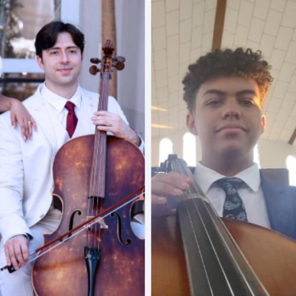
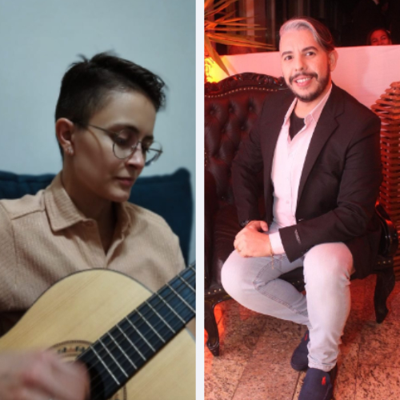
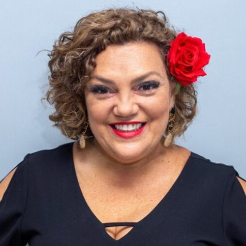
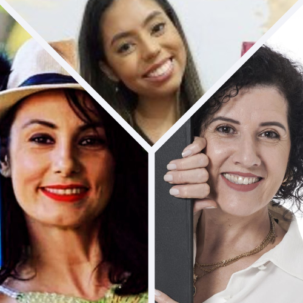

1° dia (30/09)
Batuque de tambor d´água
com Equipe de Rio Claro
450 vagas
Cursos
Convidados
Público Externo
19h00
Auditório Jamil Salomão
Equipe de Batuque de tambor d´água - Ensino de música: MESTRE Thierry Roberto -
Equipe de Rio Claro.
Permanência, qualidade e equidade para a conclusão da Educação
Básica
com Dra. Daniela Gobbo Donadon
450 vagas
Cursos
Convidados
Público Externo
19h30 às 21h30
Auditório Jamil Salomão
Dra. Daniela Gobbo Donadon: Graduada em Pedagogia (2009), Mestre em Educação
(2013) e Doutora em Educação (2020) pela Universidade Estadual de Campinas - UNICAMP, com bolsas de
Iniciação Científica, de Mestrado e de Doutorado financiadas pela Fundação de Amparo à Pesquisa do
Estado de São Paulo - FAPESP. Pesquisadora na área da alfabetização e do letramento, dos processos
de aprendizagem e desenvolvimento humano, das práticas pedagógicas, da construção subjetiva humana
em uma perspectiva histórico-cultural, da dimensão afetiva em uma compreensão monista, da Educação
de Jovens e Adultos (EJA). É integrante do Grupo de Estudos em Afetividade, inserido no Grupo de
Pesquisa Alfabetização, Leitura e Escrita - ALLE, e do Grupo de Estudos e Pesquisas em Educação de
Jovens e Adultos - GEPEJA, da Faculdade de Educação da UNICAMP. Com bolsa internacional de estudo e
pesquisa da UNICAMP, estudou na Universidad Complutense de Madrid, no curso de Diplomatura en
Educación Social. É professora de Educação Básica na Prefeitura Municipal de Campinas-SP, onde
atualmente atua como vice-diretora na EMEJA Nísia Floresta Brasileira Augusta. Também atua como
formadora em projeto de Reordenamento da EJA e no CEFORTEPE, para os GEs de Coordenadores de Ciclo
da rede. É professora da PUC-Campinas no curso de Pedagogia e nas Licenciaturas.
2° dia (01/10)
Show de violino
com Silviolino (Sílvio Luiz)
450 vagas
Cursos
Convidados
Público Externo
19h00
Auditório Jamil Salomão
Silviolino (Sílvio Luiz): Instrumentista. Violinista. Iniciou sua trajetória
musical aos 14 anos de idade. Estudou música no Conservatório de Tatuí. Iniciou a carreira artística
profissional tocando na Orquestra Sinfônica de Campinas. No começo dos anos 1990, foi um dos
fundadores da Banda Buffalo, de country music. Apresentou-se durante duas versões da Semana Nenete
de Música Caipira,fazendo abertura de diferentes shows. Em 2014, lançou seu sétimo CD.

Breve contação de história
com Aline Silva
450 vagas
Cursos
Convidados
Público Externo
19h00
Auditório Jamil Salomão
Aline Silva: possui graduação em Arte Dramática pelo Senac (2011) e Pedagogia
(2023). Palhaça, contadora de histórias e escritora. Autora do livro Gaiolas Abertas Asas Libertas,
baseado em fatos reais (2021).
Oficina 1
Musicalização com contação de história
com Márcia Tomiyama e Andreia Celegato
50 vagas
Cursos
Convidados
Público Externo
19h45 às 21h30
Auditório Jamil Salomão
- Mini currículo: Márcia Tomiyama: escritora e contadora de histórias. Organizadora da FLAAM – Feira Literária e Artística de Americana e apoio a outros eventos culturais em Americana e na região, juntamente com Juliano Schiavo. Administra junto com Alyssa Tomiyama, o projeto de incentivo à leitura “Alyssa e a magia da leitura”. Fomenta o gosto pela leitura e escrita por meio de palestras, contação de histórias, mediação entre escolas e escritores, ações culturais e eventos literários.
- Mini currículo: Esp. Andreia Celegato: Pisicopegadoga, Professora, Contadora de Histórias, Educadora Brincante, Especialista em Musicalização Infantil, Autora de Livros e Compositora de Músicas Infantis.
Oficina 2
Adaptações literárias contemporâneas
com Luiza Cláudia Marinho
50 vagas
Cursos
Convidados
Público Externo
19h45 às 21h30
Sala Vip I
Esp. Luiza Cláudia Silva Marinho: Graduada em Letras Português/Inglês, Especialista em: Docência da
Língua Portuguesa para Estrangeiros e Tradução/Versão nos pares Português/Inglês. Revisora
literária. Tradutora/versionista.
Oficina 3
Competências socioemocionais e cultura de paz nas escolas
com Dra. Andreia Patapoff
50 vagas
Cursos
Convidados
Público Externo
19h45 às 21h30
Sala Vip II
Prof.ª Drª Andréa Patapoff Dal Coleto: Diretora de Gestão Pedagógica/ DEGEPE - SMEDU - Paulínia.
Oficina 4
Diversidade na sala de aula
com Valdirene Silva
50 vagas
Cursos
Convidados
Público Externo
19h45 às 21h30
Sala 114 - bloco 3
Esp. Valdirene Silva: Graduada em Pedagogia. Pós graduada em Psicopedagogia Clínica e Institucional.
Possui cursos de capacitação para manejo de comportamento e adaptação de conteúdo em ambiente
escolar. Professora do munícipio de Nova Odessa.
Oficina 5
Imigrantes e refugiados em sala de aula
com Kalyne Jeuken Teixeira
50 vagas
Cursos
Convidados
Público Externo
19h45 às 21h30
Sala 115 - bloco 3
Doutoranda Kalyne Jeuken Teixeira: Graduada em Pedagogia pela Pontifícia Universidade Católica de
Campinas (2018). Durante o curso de Pedagogia participou de pesquisa de Iniciação Científica. Mestra
em Educação pelo Programa de Pós-Graduação em Educação da Pontifícia Universidade Católica de
Campinas (2021). Durante o mestrado desenvolveu uma pesquisa sobre a afetividade relacionada ao
processo de escolha profissional de estudantes do Ensino Médio. Atualmente está cursando o Doutorado
em Educação pelo Programa de Pós-Graduação em Educação da Unicamp e está desenvolvendo uma pesquisa
que busca investigar os seguintes temas: afetividade, migração e contexto escolar.
3° dia (02/10)
Dueto de cello
com Guilherme Pantarotti e Ricciery Henrique Santana
450 vagas
Cursos
Convidados
Público Externo
19h00
Auditório Jamil Salomão
- Guilherme Savoia Pantarotti: integrante da Orquestra do SENAI que promove apresentações beneficentes.
- Ricciery Henrique de Sousa de Santana: integrante da Orquestra do SENAI que promove apresentações beneficentes.

Apresentação de violino com violão
com Carol Madac e Fabrício Porto
450 vagas
Cursos
Convidados
Público Externo
19h00
Auditório Jamil Salomão
- Carol Madac: Formada no curso de Licenciatura em Música pela Universidade Federal de São Carlos. Durante a graduação atuou como flautista da Orquestra Experimental da UFSCar. Leciona Música e Arte, já trabalhou em escolas municipais de Santa Bárbara d'Oeste e Americana. Atua também como Professora particular de violão.
- Fabrício Porto Gomes: Professor de Arte, Violinista de Eventos e estudante de idiomas. Licenciado em Música pela UNIMEP (Universidade Metodista de Piracicaba) em 2015. Já ministrou aulas de Música na rede pública para o Município de Águas de São Pedro, Arte e Inova Educação para o Estado de São Paulo e na rede privada em Piracicaba. Atualmente, assumiu o cargo na rede municipal de Americana como professor de Arte e também atua como professor de Inglês do ciclo I no CIEP JAGUARI.

Roda de conversa:
Desafios e Práticas bem sucedidas sob o olhar de ex-estudantes
FAM
com Katerini de Oliveira Pereira; Matheus Dias; Lara Craici e
Débora Maria Penteado
450 vagas
Cursos
Convidados
Público Externo
19h30 às 21h15
Auditório Jamil Salomão
- Esp. e ex-aluna Katerini de Oliveira Pereira: Graduação em Pedagogia. Pós graduação em Psicopedagogia clínica/ institucional; Atendimento educacional especializado; Alfabetização e letramento; Está cursando a segunda graduação em História.
- Esp. e ex-aluno Matheus Dias de Souza: formado em Pedagogia pela Fam em 2014. Pós graduado em Psicopedagogia, Pensamento Computacional e Matemática nos Anos Inicias. Professor Efetivo na Rede Estadual de São Paulo desde 2017. Professor Efetivo na Rede Municipal de Nova Odessa desde 2019.
- Esp. e ex-aluna Lara Craici: Graduada em Pedagogia pela Faculdade de Americana FAM (2022). Pós graduação em Prática da Educação Bilíngue UniDomBosco (2023). É Professora do Ensino Fundamental - MapleBear Canadian School e também Professora de Inglês-Influx na English School.
- Esp. e ex-aluna Débora Maria Bosco Biondo Franco Penteado: é professora de Língua Portuguesa e Língua Inglesa, com 7 anos de experiência no ensino. Graduada em Letras - Português e Inglês pela Faculdade de Americana (2019), possui especializações em Psicopedagogia (2021), Neurociências, Educação e Práticas Pedagógicas (2021) pelo UNISAL e Gestão Escolar (2023) pela UNIFAEL . Iniciou sua trajetória como Monitora do Núcleo de Apoio Psicopedagógico ao Estudante (2017), na FAM. Atualmente, leciona na rede pública e particular com o objetivo de contribuir para o desenvolvimento educacional de seus alunos.
Encerramento com canto
com Dra. Cláudia Cristina Fiório Guilherme
450 vagas
Cursos
Convidados
Público Externo
21h15
Auditório Jamil Salomão
Doutora em Educação Escolar pela UNESP - Araraquara (2002). Possui Graduação em Licenciatura em
Pedagogia pela Universidade Estadual Paulista Júlio de Mesquita Filho - Rio Claro (1993),
Licenciatura em Música no Centro Universitário Claretiano de Rio Claro (2020), Mestrado em
Metodologia de Ensino pela Universidade Federal de São Carlos (1998), Pós Graduação - Especialização
pela PUC -RS "A moderna Educação: metodologias, tendências e Foco no aluno" (2019) e Curso Técnico
em Gastronomia pelo Instituto Gastronômico das Américas - IGA. Atualmente é professora na Faculdade
de Americana - FAM - Associação Educacional Americanense, Curso de Pedagogia e Secretária Adjunta de
Cultura do Município de Rio Claro. Atua como cantora na Banda Neon e cantora do projeto da Orquestra
Filarmônica de Rio Claro no projeto "Mulheres que cantam e encantam".

Vendas de livros: autores da FLAAM
com Aline Silva, Bianca Camilo Moni e Silvia Regina Delazari
450 vagas
Cursos
Convidados
Público Externo
21h30 às 22h00
Auditório Jamil Salomão
- Aline Silva: possui graduação em Arte Dramática pelo Senac (2011) e Pedagogia (2023). Palhaça, contadora de histórias e escritora. Autora do livro Gaiolas Abertas Asas Libertas, baseado em fatos reais (2021).
- Expositora de livros: Sílvia Delázari é escritora, contadora de histórias e foi professora de Língua Portuguesa por 30 anos. Apaixonada pelos livros, costuma dizer que nasceu com as palavras coladas ao corpo. É autora de 6 livros (infantil-infanto-juvenil) e de um livro de poemas intimistas, Escrevoo, título recém publicado. Também já participou de diversas antologias com poemas, contos e crônicas. Especialista em Formação do Leitor e Mediadora de leitura, desenvolveu diversos projetos de incentivo à leitura. Atualmente se dedica a ministrar palestras sobre leitura e escrita e oficinas de escrita criativa, especialmente na temática de memória e escrita de si.

Curta se achou a pagina útil e acompanhe Info.FAM